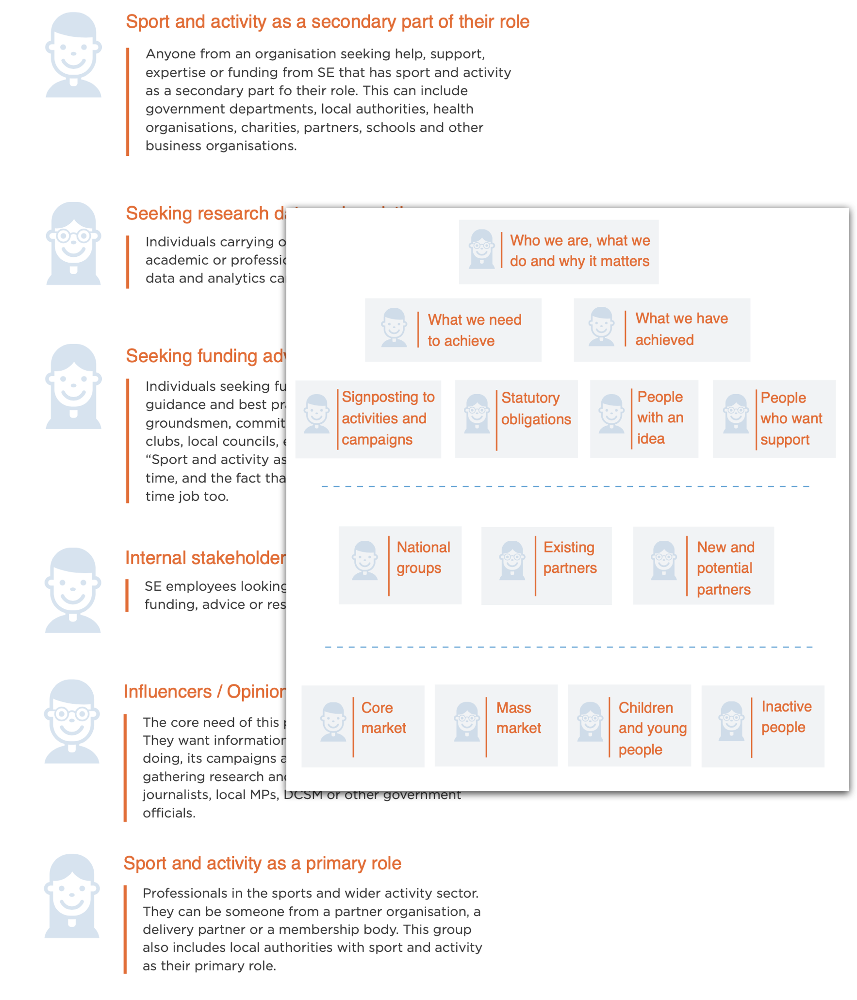
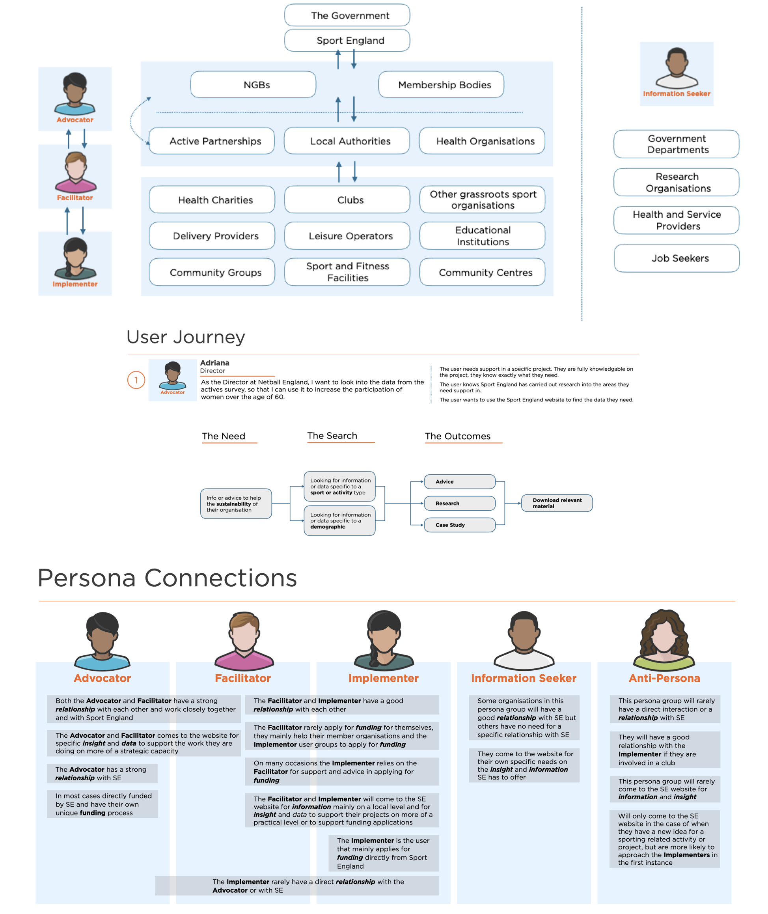
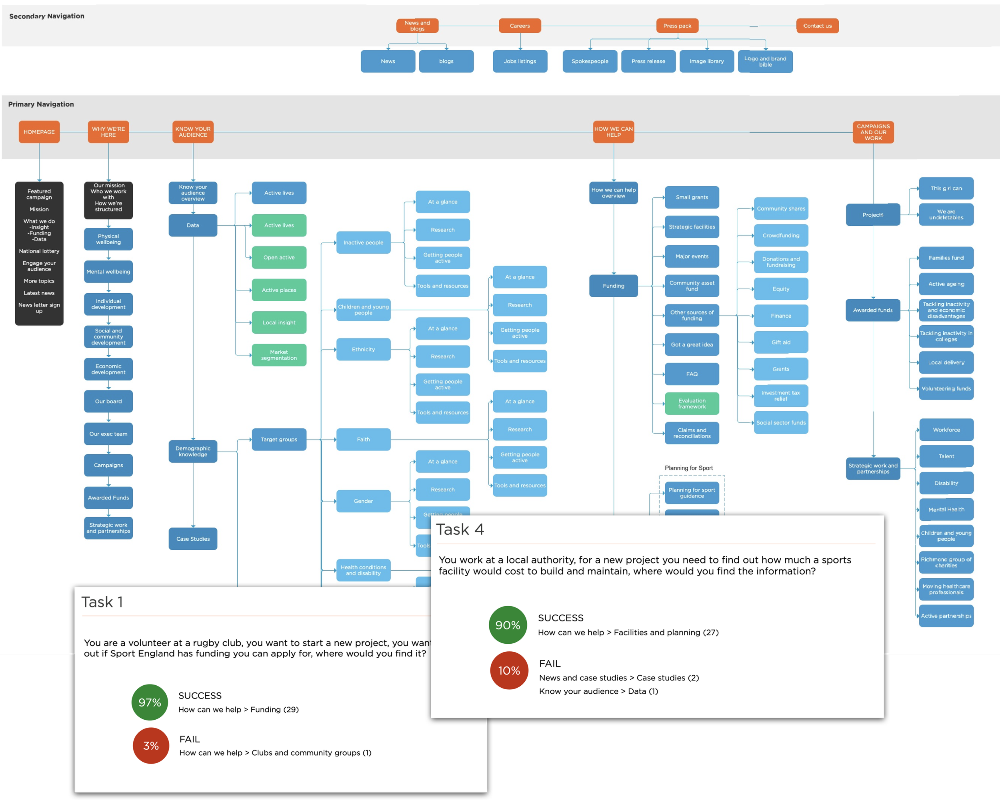
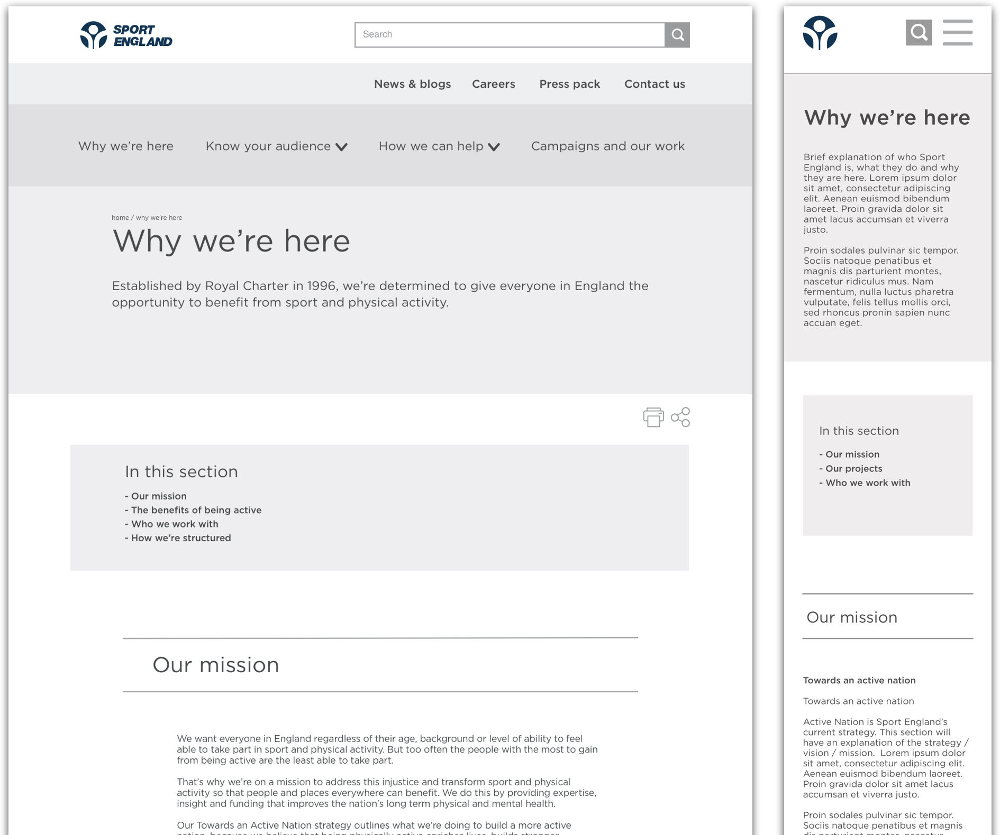
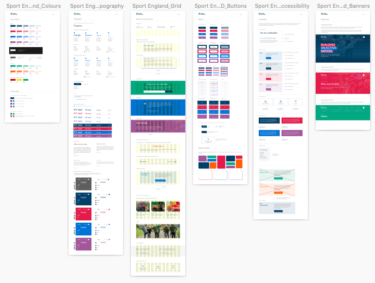

About sport england
Sport England is the public body responsible for growing and developing grassroots sport and physical activity in England, distributing funding and supporting communities to be more active.
The problem
Their content-heavy website is accessed by thousands of businesses and end users every day, each of them searching for specific information. However, its structure was no longer fit for purpose: The content had been growing but the information architecture had never been reviewed.
As a consequence, there was duplicate content, outdated information and unintuitive user journeys.
Following a UCD, I lead the design team to rebuild the whole website, following agile sprints.
My role
Leading a team of 2 UX designers and 1 visual designer.
Challenges
- Working in an agile fast-paced environment
- Reorganising a large amount of content
- Designing for a very varied audience
-
+613%
Increase in traffic 1 year after launch
-
+1000%
Increase in mobile traffic
-
Defining the audience
B2B or B2C, and identifying personas.
-
Content strategy
Content audit, sitemap and IA.
-
Design & iterate
Agile sprints and the design system.
-
The result
613% more traffic, 1000% mobile growth.
Defining the audience
B2B or B2C?
After a kick off workshop and after speaking to the main stakeholders, it became clear that a big problem was that the current website was trying to speak to too many audiences without a proper logic behind it.
We needed to identify our audience and their needs.
One of the first decisions was to understand whether the website should have been B2C or B2B, or both.
I wrote a research strategy plan which included interviews to:
- Sport England employees
- current and potential partners
- people who previously applied for grants or who could do it in future
- general public
Following this research, it became clear that Sport England needed to focus on B2B communication only, and redirect general public to the relevant satellite websites.

Identifying personas
However, even reducing the communication to “only” B2B, this still meant addressing a wide range of different organisations and businesses.
To be able to build a solid content strategy, we needed to identify personas.
Analysing the needs, goals and motivations of the B2B audience, I was able to identify 3 primary personas:
- Advocate – professionals that support Sport England’s strategy, making decisions and developing policies.
- Facilitator – professionals that apply the local strategy, acting as the bridge between the Advocate and Implementor.
- Implementer – professionals that provide sports or activities to the general public, less involved with the national strategy.

Content strategy
The biggest challenge: the content
Now that we had the personas, we could move onto the most challenging aspect of this project: the amount of content we had to deal with.
To make sure that the new website would support a better IA, I set up the following strategy:
- The client hired some copywriters. My team and I then worked closely with them to avoid a gap between content and design
- I audited the current content to analyse where the main issues were
- I set up and tested (with online tree testing) a first high level sitemap, which we would have refined during each sprint rather than setting it in stone from the beginning
- I worked closely with the marketing team to optimise the SEO

Design & iterate
Designing & iterating
Once we had a rough idea of the general structure of the website, we started to design and implement parts of it through Agile sprints.
In each sprint:
- we designed a specific part of the website (which we had previously prioritised) meeting AA accessibility standards
- we tested it with real or potential users
- we iterated the design and refined/changed the IA for that part of the website
While designing I also made sure that we would reuse the same components as much as possible.


Building the design system
Working closely with the visual designer, we also created a design system with all the components used across the website.
To create it we used atomic design principles.
The result
One year after launch, the redesigned website had achieved a 613% increase in overall traffic and a 1000% increase in mobile traffic.
Testimonials
Thank you for all your help on the project – it is no exaggeration that we wouldn’t have been able to get it to the position it is and with such backing from our exec without your help and expertise. Simon Osborn, Senior Content Editor, Sport England